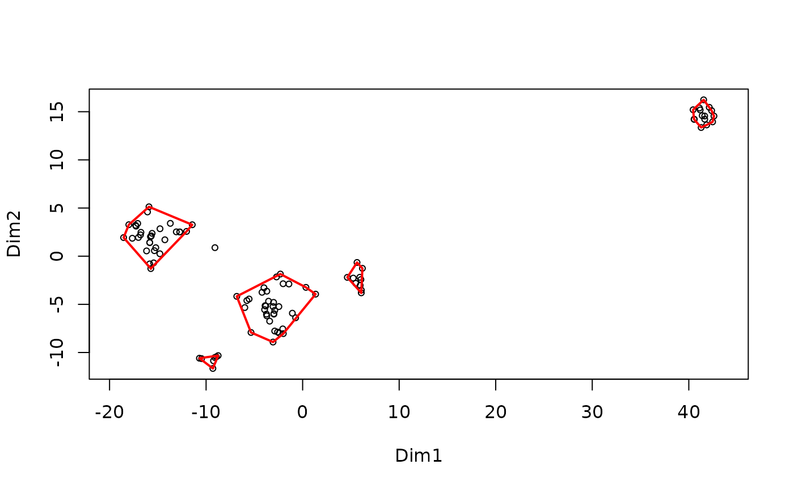
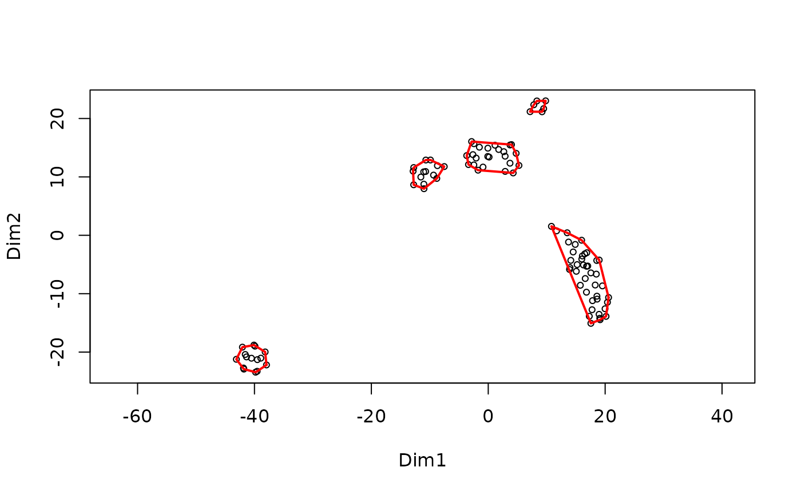

MakeClusterList.RdThis function groups t-SNE data points into clusters using a specified threshold and visualizes the clusters.
MakeClusterList(ptmtable, toolong = 3.5)MakeClusterList(ptmtable, toolong = 3.5)
#> [1] "Converting Data Types..."
#> [1] "Calculating Spearman Correlation..."
#> [1] "Calculating Spearman Dissimilarity..."
#> [1] "Filtering missing values..."
#> [1] "Mapping Data Points..."
#> [1] "Converting Data Types..."
#> [1] "Finding maximum distance..."
#> [1] "Filtering missing values..."
#> [1] "Normalizing distances..."
#> [1] "Mapping Data Points..."
#> Connectivity of distance matrix with threshold dissimilarity 3.5
#> Data are disconnected: 6 groups
#> Groups sizes
#> 1 2 3 4 5 6
#> 32 10 35 15 7 1
#> threshold dissimilarity 3.5
#> 6 groups
#> species scores not available

#> Connectivity of distance matrix with threshold dissimilarity 3.5
#> Data are disconnected: 100 groups
#> Groups sizes
#> 1 2 3 4 5 6 7 8 9 10 11 12 13 14 15 16 17 18 19 20
#> 1 1 1 1 1 1 1 1 1 1 1 1 1 1 1 1 1 1 1 1
#> 21 22 23 24 25 26 27 28 29 30 31 32 33 34 35 36 37 38 39 40
#> 1 1 1 1 1 1 1 1 1 1 1 1 1 1 1 1 1 1 1 1
#> 41 42 43 44 45 46 47 48 49 50 51 52 53 54 55 56 57 58 59 60
#> 1 1 1 1 1 1 1 1 1 1 1 1 1 1 1 1 1 1 1 1
#> 61 62 63 64 65 66 67 68 69 70 71 72 73 74 75 76 77 78 79 80
#> 1 1 1 1 1 1 1 1 1 1 1 1 1 1 1 1 1 1 1 1
#> 81 82 83 84 85 86 87 88 89 90 91 92 93 94 95 96 97 98 99 100
#> 1 1 1 1 1 1 1 1 1 1 1 1 1 1 1 1 1 1 1 1
#> threshold dissimilarity 3.5
#> 100 groups
#> species scores not available
#> Connectivity of distance matrix with threshold dissimilarity 3.5
#> Data are disconnected: 5 groups
#> Groups sizes
#> 1 2 3 4 5
#> 41 14 24 15 6
#> threshold dissimilarity 3.5
#> 5 groups
#> species scores not available
